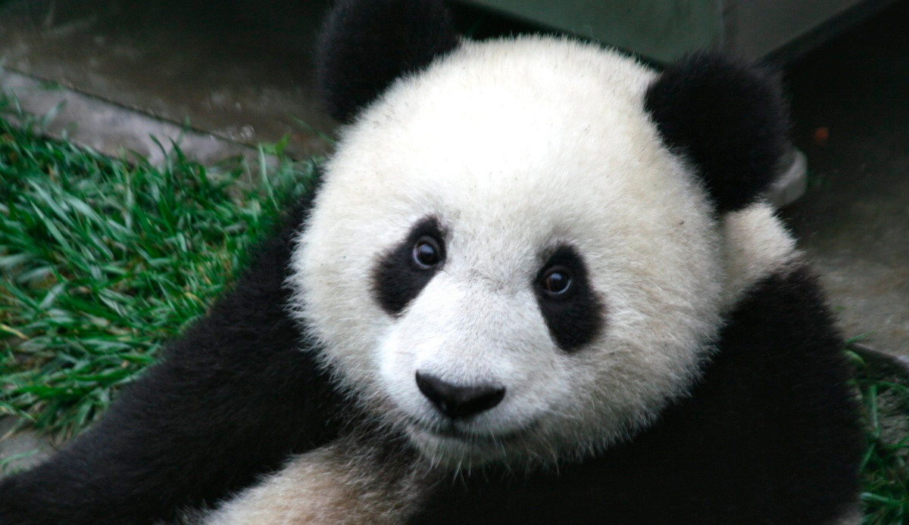

Aunque pertenece al orden de los carnívoros, el panda es un animal mayormente herbívoro, alimentándose casi exclusivamente de cerca de treinta especies de caña de bambú (el 99 % de su dieta consiste en bambú). Se sabe que también utiliza insectos y huevos como fuente de proteínas.


Durante mucho tiempo, el panda gigante, junto al panda rojo, fue incluido en la familia de los prociónidos, la misma de los mapaches. Pruebas genéticas recientes lo colocan en la familia de los osos (Ursidae),29 siendo su pariente más cercano el oso de anteojos de América del Sur. Existen dos subespecies de panda gigante: Ailuropoda melanoleuca melanoleuca - a la que pertenece la mayor parte de la población de pandas; se encuentra en las regiones montañosas de Sichuan. Ailuropoda melanoleuca qinlingensis - vive en las montañas Qinling en Shaanxi a 1.300-3.000 m s. n. m. Se distinguen de la variedad de Sichuan por tener una coloración distinta (marrón claro y oscuro) y una cabeza más pequeña con molares más largos.

La mayoría de los tigres tienen un pelaje naranja o leonado, un área intermedia y ventral blanquecina y las rayas varían en tono desde marrón oscuro hasta el negro. La forma y cantidad de las rayas varían según su sexo (si es hembra la cantidad de rayas es menor), aunque la mayoría de los tigres suelen tener menos de 100 rayas. El patrón de rayas es único en cada ejemplar y es posible utilizar esto para identificar a un individuo, de la misma forma que las huellas dactilares se utilizan para identificar a una persona. Sin embargo, debido a lo difícil que es registrar el patrón de rayas en un tigre salvaje, este no es el método más usado para la identificación de un tigre. Probablemente, la función de las rayas es el camuflaje, siendo útil para ocultarse de sus posibles presas. El patrón de rayas también se encuentra en la piel del tigre, por lo que, si es afeitado, sus rayas distintivas pueden ser observadas.


Los tigres adultos suelen ser ferozmente territoriales y cazan mucho. Las tigresas pueden tener un territorio de 20 km², mientras que el territorio de los machos es mucho más extenso, cubriendo un área promedio de 80 km²; sin embargo, el tamaño del territorio depende de las diferentes poblaciones del tigre, siendo más grandes los territorios pertenecientes a los tigres del sudeste de Rusia que los de cualquier otra subespecie de tigre. Los tigres machos pueden permitir la entrada de varias hembras a su territorio, hasta el punto de compartir una presa e incluso alimentarse después que la hembra (en el caso del león, ocurre exactamente todo lo contrario, pues es el macho dominante el primero en alimentarse); pero no toleran la entrada de otros tigres machos en su territorio. Debido a su naturaleza agresiva, los conflictos territoriales entre tigres son violentos y pueden terminar con la muerte de uno de los machos, aunque este tipo de muertes son menos frecuentes de lo que se cree, pues en la mayoría de las luchas por el territorio los machos terminan prácticamente ilesos. Para marcar su territorio el macho rocía la orina u otras secreciones sobre los árboles.
Se caracteriza por tener un cuerpo cubierto de un pelaje espeso y lanudo, de color pardo pálido a gris, cabeza ovalada y ojos grandes. Pesa entre 1,5 y 2,5 kg en estado salvaje. Tiene orejas largas de hasta 7 cm las cuales le ayudan a regular la temperatura del cuerpo y una cola muy corta. Sus patas anteriores son más cortas que las posteriores. Mide de 34 a 50 cm en condiciones favorables, incluso más en razas domésticas. Todas estas características que posee esta especie en estado salvaje pueden variar significativamente según la raza. Los machos tienen la cabeza más ancha que las hembras.
El conejo es un animal gregario y territorial (territorios de menos de 15 m², en ocasiones solo uno o dos). En óptimas condiciones de terreno y alimento prefieren vivir en largas y complejas conejeras o madrigueras. En ellas habitan de seis a diez individuos adultos de ambos sexos. La jerarquía de dominancia es importante en los machos ya que establece quién tiene prioridad para el apareamiento. Animal de hábitos nocturnos y crepusculares, se alimenta desde que anochece hasta que amanece y pasa la mayor parte del día en su madriguera. Habitualmente son muy silenciosos pero emiten fuertes chillidos cuando están asustados o heridos. Otros tipos de comunicación son los olores y el contacto físico.